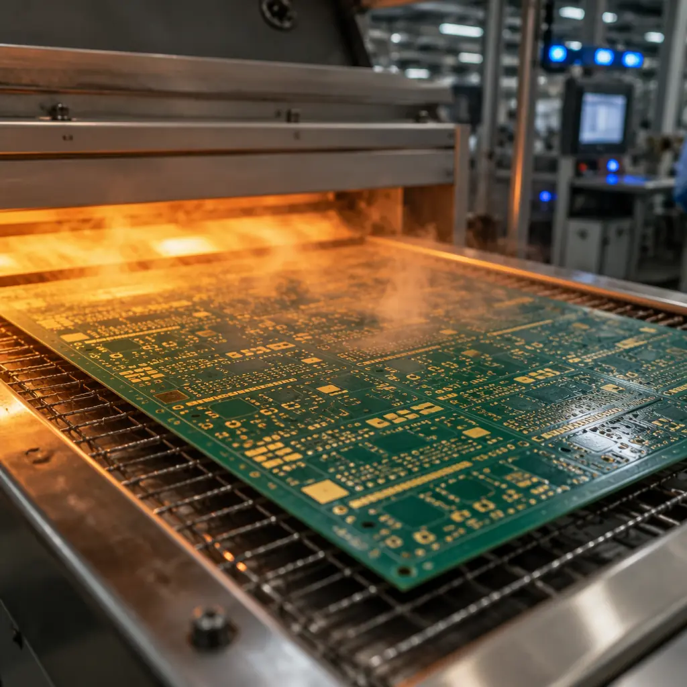
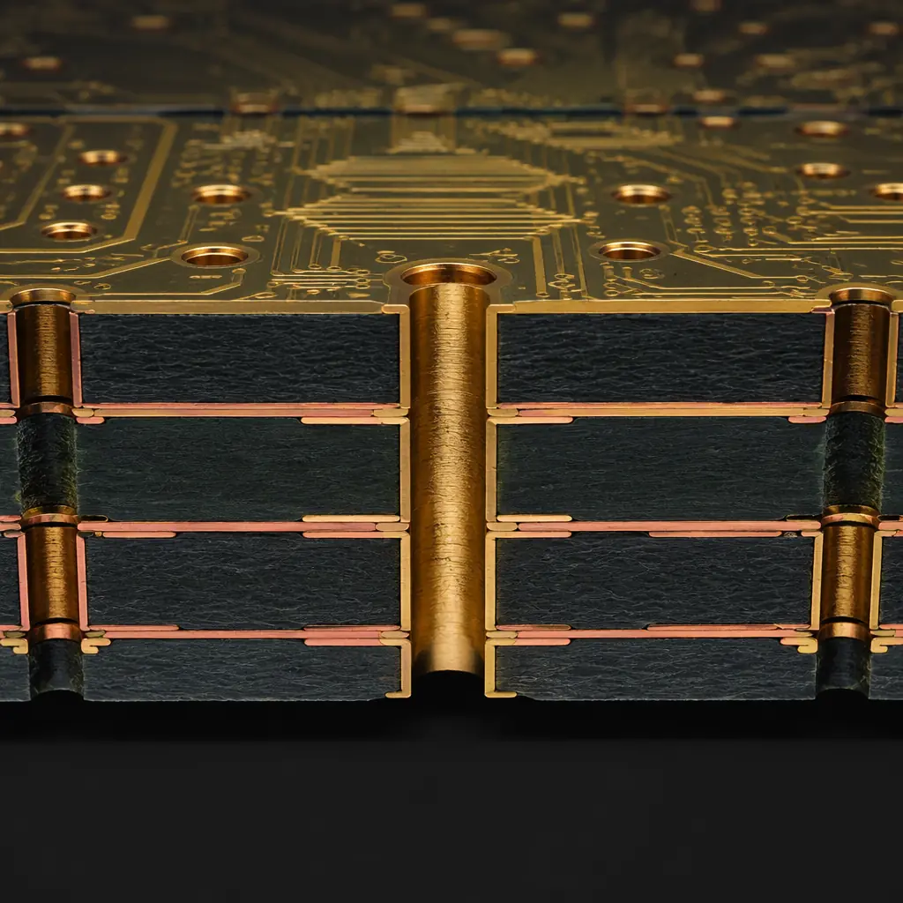
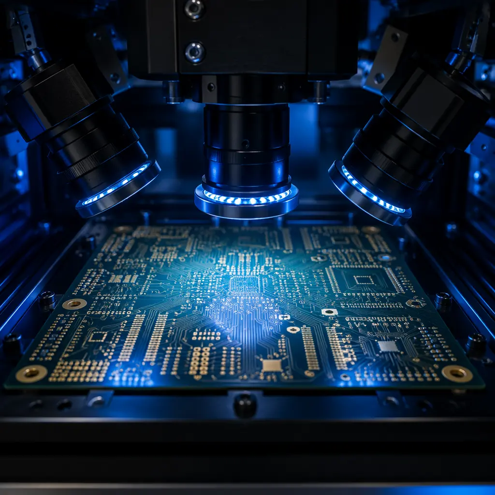

When a prototype deadline shifts forward by two weeks or a production line stalls waiting for a single PCB revision, the difference between a supplier who can deliver in 72 hours and one who needs 15 days is measured in revenue. Quick-turn PCB manufacturing is not a luxury service — it is an operational necessity for hardware teams that cannot afford idle assembly lines. But speed without process discipline creates its own set of risks: skipped inspections, substituted materials, and boards that pass visual check but fail functional test three weeks later.
At Huaxing PCBA, we run 8 high-speed SMT lines capable of 8 million placements per day, with a dedicated quick-turn cell that processes urgent orders without disrupting standard production schedules. This setup — combined with IATF 16949 and ISO 9001 certified processes — means accelerated lead times are achieved through parallelization, not corner-cutting. Here is what procurement professionals need to know before placing a quick-turn order.

What "Quick-Turn" Actually Means in PCB Manufacturing
The term "quick-turn" is used loosely across the industry, but in a production environment with ISO-certified processes, it has a specific operational definition. A true quick-turn PCB service means the supplier has allocated dedicated equipment capacity, pre-stocked the most common materials, and designed a separate workflow that does not queue behind standard orders. Without these three conditions, "quick-turn" is just a marketing label applied to rush fees on an overloaded production line.
Dedicated Quick-Turn Cell — Not Just Queue Jumping
A genuine quick-turn operation maintains a physically separate production cell — often a subset of SMT lines and drilling/routing machines — reserved exclusively for expedited orders. This cell runs independently from the main production floor. When your order arrives, it goes straight into this cell without waiting behind a batch of 10,000 standard boards. At Huaxing, 2 of our 8 SMT lines are allocated to the quick-turn cell, supported by dedicated laser drilling and AOI stations. This parallel capacity means a 4-layer board with standard FR-4 and ENIG finish can complete fabrication and assembly in 48 hours.
Pre-Stocked Material Inventory — FR-4, High-Tg, ENIG Ready
The biggest source of lead time variability is material availability. A quick-turn supplier must warehouse the most commonly specified laminates (standard FR-4, High-Tg FR-4, Rogers 4350B in 0.8mm–1.6mm thicknesses), prepregs, solder mask in standard colors, and surface finish chemistries. At Huaxing, our quick-turn material rack holds enough inventory for 5,000 square meters of PCB fabrication — covering the majority of urgent orders without waiting for supplier shipments. For a deeper dive into substrates, see our PCB Materials Guide comparing FR-4, High-Tg, and Rogers options.
Process Validation Runs Concurrently — Not Sequentially
In a standard production flow, fabrication completes → then assembly → then inspection. In a quick-turn flow, these stages are parallelized: assembly setup begins while the last fabrication step is finishing, and AOI programming is prepared from Gerber data while boards are in reflow. This requires a production engineering team that can manage parallel workstreams — a capability that separates real quick-turn providers from those who simply charge more for the same linear process.
Procurement Reality Check: Ask any quick-turn supplier three questions before placing an order: (1) "Do you have a physically separate quick-turn cell, or do expedited orders share the same lines?" (2) "What materials do you stock on-site for quick-turn — can you show me a current inventory list?" (3) "What inspection steps are never skipped, regardless of turnaround time?" A supplier who hesitates on question 3 is likely cutting corners under time pressure.
DFM Rules That Enable Speed Without Sacrificing Quality
Quick-turn success begins long before the order is placed — it starts in the PCB design file. A Gerber package optimized for manufacturability moves through fabrication with fewer engineering queries, fewer CAM revisions, and zero re-spins. Conversely, a poorly prepared design adds 12–24 hours of back-and-forth even before production starts. These are the specific DFM rules that procurement teams should communicate to their hardware engineers before submitting a quick-turn order.

Standardize on Stock Laminate and Copper Weight
The single fastest way to delay a quick-turn order is specifying a non-stock laminate. Verify that your design uses a material the supplier warehouses for quick-turn: standard FR-4 (Tg 130–140°C), High-Tg FR-4 (Tg 170–180°C), or a commonly stocked RF material like Rogers 4350B. Similarly, copper weights of 1oz (35μm) for inner and outer layers match what most suppliers stock. Moving to 2oz or 3oz copper may add 24–48 hours for material procurement. For boards that genuinely need heavy copper, see our Heavy Copper PCB Manufacturing Guide — but plan those orders on standard lead times.
Eliminate Unnecessary Via Complexity
Through-hole vias with a minimum drill diameter of 0.3mm and annular ring of 0.15mm are the sweet spot for quick-turn — any fab shop can process these without special tooling. Blind and buried vias, while essential for high-density designs, add laser drilling steps and lamination cycles that extend lead time by 1–2 days. Via-in-pad with plating also requires additional steps. If your design can achieve routing completion with through-hole vias only, specify that in the fabrication notes. For when microvias are unavoidable, our PCB Via Technology Guide explains the trade-offs between blind, buried, and backdrilled approaches.
Submit Complete Gerber + NC Drill + IPC-356 Netlist in One Package
Incomplete data packages are the most common cause of quick-turn delays. Every order must include: all Gerber layers (copper, solder mask, silkscreen, solder paste, board outline), NC drill file with tool list, and an IPC-356 netlist for electrical testing. Missing the netlist means the supplier must generate one from Gerber data — adding 4–8 hours and introducing interpretation risk. If you are new to Gerber preparation, read our Gerber Files Complete Checklist before exporting. A properly prepared package moves straight from email to CAM to production with zero engineering queries.
Keep Layer Count at 6 or Below for Genuine 72-Hour Delivery
Each additional layer pair adds a lamination cycle (typically 2–4 hours) and increases registration complexity. A 2-layer board can realistically complete fabrication in 8–12 hours; a 4-layer in 16–24 hours; a 6-layer in 24–36 hours. Above 6 layers, the lamination and drilling stack pushes fabrication beyond the 72-hour window — at that point, a standard 5-day lead time with full process validation is the safer choice. Huaxing's quick-turn cell handles up to 32 layers on standard lead times, but we recommend 6 layers maximum for expedited orders. For high-layer-count designs, see our HDI PCB Technology Guide.
Specify Standard Surface Finish — ENIG or HASL (Lead-Free)
ENIG (Electroless Nickel Immersion Gold) and lead-free HASL are the most commonly stocked surface finishes and require no special preparation. ENEPIG, hard gold, and immersion silver may require chemistry setup that delays the start of fabrication by 4–12 hours. For a detailed comparison of all surface finish options and their trade-offs — including shelf life, cost, and application suitability — refer to our ENIG vs HASL vs OSP Surface Finish Guide.
Quality Verification for Quick-Turn Orders
The central tension in quick-turn manufacturing is speed versus verification. Standard orders allow time for full AOI + X-Ray + ICT + functional test — a sequence that takes 4–8 hours on its own. Quick-turn orders compress this window, but the right approach is not to skip testing — it is to select the highest-signal inspections for the specific board type and run them in parallel with packaging.

AOI + Flying Probe: The Non-Negotiable Baseline
Automated Optical Inspection catches surface-level defects — solder bridges, missing components, tombstoning, polarity errors — in under 2 minutes per board. Flying probe testing verifies electrical continuity on every net without requiring a custom test fixture (which would add 3–5 days for fabrication alone). This combination covers roughly 85% of common PCB defects and runs in under 10 minutes for a typical 4-layer board. Neither step should ever be skipped, regardless of turnaround urgency. For a complete comparison of all testing methodologies, see our PCB Testing Methods Guide.
X-Ray for BGA and QFN Packages Only
X-Ray inspection is essential for hidden solder joints under BGAs, QFNs, and LGAs — but for boards using only visible-lead components (SOICs, QFPs, passives), X-Ray adds inspection time without proportionate risk reduction. On quick-turn orders, reserve X-Ray for the specific BGA/QFN sites, not the entire board. Our BGA Assembly Guide covers the specific void acceptance criteria and inspection protocols for ball-grid packages.
Cross-Section Analysis on the First Article Only
For multi-board quick-turn orders, perform micro-section analysis on the first board off the line — not every board in the batch. A single cross-section verifies copper plating thickness, via wall integrity, and dielectric bonding quality. If the first article passes, the process is validated for the remainder of the batch. This saves 30–45 minutes per additional board while maintaining process confidence.
Factory Reality: The most common defect on quick-turn orders is not a manufacturing error — it is a design file issue that would have been caught during a normal DFM review. In a survey of 500 quick-turn orders processed at Huaxing in Q2 2026, 62% of defects originated in the design file (missing solder mask clearances, annular ring violations, acid trap geometries), not in fabrication. The single highest-ROI action a procurement team can take is sending the design through a DFM check before submitting the quick-turn order. Our 8 DFM Rules That Cut Costs by 30% covers the most frequent design issues we encounter.
Quick-Turn Cost Structure: What You're Paying For
Quick-turn PCB manufacturing typically costs 2×–4× the standard lead-time price for the same board. Understanding what that premium funds helps procurement professionals separate legitimate rush charges from opportunistic markup.
| Cost Driver | Standard Lead Time | Quick-Turn (24-72h) | Why the Difference |
|---|---|---|---|
| Material allocation | Pooled inventory, pull-as-needed | Reserved stock, pre-allocated | Dedicated inventory carries holding cost |
| Equipment utilization | Batched for efficiency (80–90% utilization) | Dedicated cell (40–60% utilization) | Lower utilization = higher cost per board |
| Engineering time | CAM review in queue (4–8 hour turnaround) | Immediate CAM + DFM review (1–2 hours) | Dedicated engineer on standby |
| Setup/small batch penalty | Amortized over 1,000+ boards | Setup cost spread over 5–50 boards | Same setup time, fewer boards to absorb it |
| Expedited shipping | Sea freight or economy air | Express air (DHL/FedEx Priority) | 2–3 day delivery vs 7–14 day |
A typical 4-layer, 100mm×100mm board with ENIG finish and 50-piece quantity might cost $8–12/board on a 10-day lead time versus $25–35/board on 48-hour quick-turn. The premium is real, but for a prototype that unlocks a $50,000 purchase order or a production line that costs $2,000/hour in downtime, the ROI calculation is straightforward. For a complete breakdown of all PCB cost factors, refer to our PCB Manufacturing Cost Drivers Guide.
When Quick-Turn Makes Sense — and When It Doesn't
Not every urgent PCB order should be quick-turn. The decision tree below helps procurement teams identify when expedited manufacturing is the right call versus when a standard lead time with better pricing and more thorough verification is the smarter play.
Prototype Validation — Ideal for Quick-Turn
When a hardware startup needs to validate a board revision before an investor demo or a certification deadline, quick-turn 24–72 hour delivery is the correct call. The cost premium is minimal compared to the opportunity cost of a missed milestone. For prototype-to-production transitions, see our Prototype vs Mass Production Cost Breakdown.
Production Line Rescue — Depends on Root Cause
If a production line is down because of a PCB defect and the replacement boards are identical to the failed batch, quick-turn is justified. But if the root cause is a design flaw, rushing a new batch of the same design guarantees the same failure. Always complete root cause analysis before ordering a replacement — even a 24-hour turnaround is wasted if the boards arrive with the same defect.
High-Complexity Boards (8+ Layers, Blind/Buried Vias, Mixed Materials) — Avoid Quick-Turn
Complex boards with 8 or more layers, multiple lamination cycles, controlled impedance on multiple layers, or mixed-material stackups (FR-4 + Rogers) should not be quick-turned. The process complexity inherently requires sequential verification steps that cannot be parallelized. A rushed complex board carries a significantly higher risk of latent defects that surface only after assembly — at which point the "saved" time is lost to rework and re-spin. For these designs, use standard 7–10 day lead times with full process control.
Regulated Industry Boards (Medical Class III, Automotive Safety) — Never Quick-Turn
Medical device PCBs requiring ISO 13485 traceability and automotive safety-critical boards under ISO 26262 must follow fully documented, sequentially gated processes. Quick-turn workflows that parallelize fabrication and inspection break the traceability chain that regulators require. For medical and automotive requirements, see our Medical Device PCB Guide and Automotive PCB Requirements. These boards need standard lead times with full documentation — no exceptions.
Procurement Checklist for Quick-Turn PCB Orders
Before submitting a quick-turn order, run through this checklist. Each unchecked item represents a potential delay that erodes the value of expedited manufacturing.
Design file is DFM-verified with zero violations
Submit a pre-checked Gerber package — not one that needs supplier-side DFM correction. The single largest source of quick-turn delay is a design that needs 3 rounds of engineering queries before production can start.
All materials are on the supplier's quick-turn stock list
Confirm laminate type, copper weight, solder mask color, and surface finish against the supplier's stocked inventory before placing the order. Non-stock materials add procurement time that defeats the purpose of quick-turn.
Layer count is 6 or below, via type is through-hole only
Unless the supplier has explicitly confirmed capability for blind/buried vias in quick-turn, default to through-hole and ≤6 layers.
IPC-356 netlist is included for electrical testing
Missing netlist = added engineering time = delay. Include it with every order.
Minimum order quantity is specified and realistic
Quick-turn is optimized for 5–200 boards. Quantities above 500 defeat the purpose — the fabrication time for large volumes exceeds 72 hours regardless of priority status.
At Huaxing PCBA, our quick-turn cell processes an average of 120 expedited orders per month with a 98.6% on-time delivery rate. Every quick-turn order receives the same ISO 9001 and IATF 16949 process controls as our standard production — the speed comes from dedicated capacity and parallelized workflows, not from skipped steps. For complex boards that require the full range of our 32-layer capability, our certifications and compliance framework applies equally to standard and expedited orders. Contact our engineering team with your Gerber files for a same-day quick-turn feasibility assessment and quote.